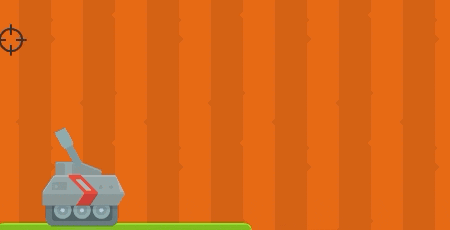
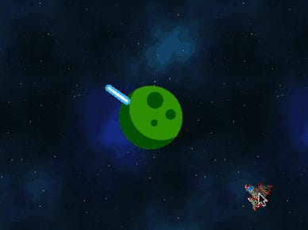

Pilas Engine пропонує кілька функцій для виконання простих геометричних обчислень, наприклад, визначення відстані між акторами або кута між ними.
Практичним прикладом може бути можливість дивитися в напрямку, де знаходиться вказівник миші: подивіться на один із прикладів, в якому гравець може рухати вказівник миші та спостерігати, як гармата правильно регулює своє обертання:

У цьому прикладі використовується функція obtener_angulo_entre_puntos:
let x = actor_cañon.x;
let y = actor_cañon.y;
let cx = pilas.cursor_x;
let cy = pilas.cursor_y;
actor_cañon.rotacion = pilas.obtener_angulo_entre_puntos(x, y, cx, cy);Функція obtener_angulo_entre_puntos отримує 4 числа, що є парами координат двох точок, в яких перебувають актор і вказівник миші відповідно. Результатом функції є значення кута в градусах.
Також є функція під назвою obtener_angulo_entre_actores, яка виконує дії, подібно вищезгаданій функції, але отримує два об'єкти - двох акторів.
Приклад, який показує це називається angulo-entre-actores. У прикладі використовується актор у вигляді космічного корабля, який постійно дивиться в центр екрану, де знаходиться актор у вигляді планети:

Якщо ви проаналізуєте код прикладу, то знайдете виклик obtener_angulo_entre_actores, подібний до наступного:
let nave = pilas.actores.nave();
let planeta = pilas.obtener_actor_por_nombre("planeta");
nave.rotacion = pilas.obtener_angulo_entre_actores(nave, planeta);Двома іншими корисними функціями в цій категорії є функції obtener_distancia_entre_puntos та obtener_distancia_entre_actores. Обидві отримують аргументи майже так само, як кутові функції вище. Відстань між актором і вказівником миші:
let actor = pilas.actores.aceituna();
let cx = pilas.cursor_x;
let cy = pilas.cursor_y;
let distancia = pilas.obtener_distancia_entre_puntos(actor.x, actor.y, cx, cy);
actor.decir(`відстань до вказівника миші становить ${distancia}`);Відстань між акторами: